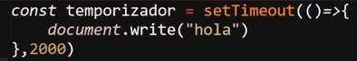
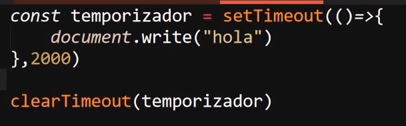
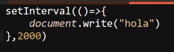
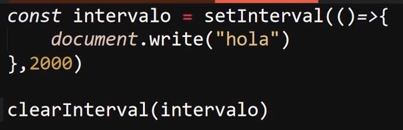

Timers JS
Se tratan de cuatro funciones incorporadas en JavaScrip las cuales realizan la misma función de un "temporizador", cada una de ellas posee sus propias caracteriticas y funcionamiento, los diferentes "timers" son:
Nota: Los temporizadores consumen una elebada contidad de recursos, por lo que no se recomienda hacer un uso excesivo de estos.
SetTimeout()
Esta funcion se utiliza para definir cuanto timpo esperar para ejecutar una función, es decir "SetTimeOut" realiza un tiempo de espera para la ejecución de la función definida,
Para lo cual esta recibe como primer valor una función (ya sea el llamado a una función o una función flecha dentro de susparentesis), y como segundo valor recibe el timpo de espera que se aplicara expresado en milesimas de segundo (1seg = 1000)

De este modo en este ejemplo la función flecha tardara dos segundos en imprimir en la pantalla
ClearTimeout()
El proposito de esta función espesificamete es el de remover "setTimeOut", por lo tanto esta función permite eliminar el tiempo de espera para la ejecución de una función.

Al almacenar "setTimeout" en una varible y aplicarle "ClearTimeout" el temporizador nunca se ejecuta.
SetInterval()
Esta función permite ejecutar una función indefinida cantidad de veces cun un cierto timpo de intervalo entre cada ejecuación, por lo tanto se podria decir que lo que "setInterval" permite es ejecutar una función cada X cantidad de tiempo.
El tiempo de intervalo de esta función tambien debe expresarse en milisegundos

ClearIterval
Esta función permite detener la infinita ejecución de "setInterval"

Para esto se guarda "setInterval" en una varible y se le aplica la función "clearInterval"